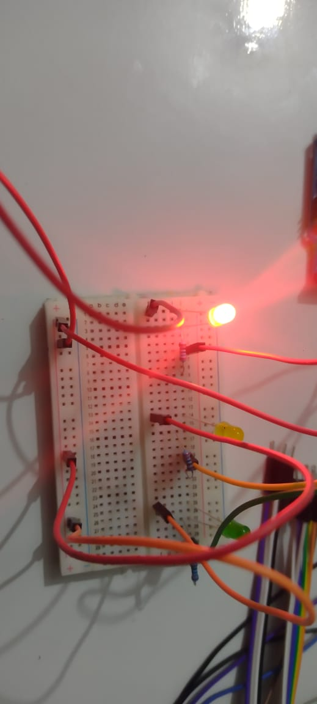
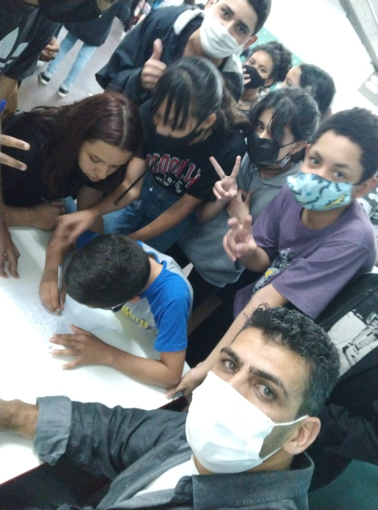

Descrição do Projeto
Este projeto, desenvolvido pelos alunos em 2021, consistiu na criação do primeiro robô feito totalmente em papelão,
com olhos de isopor, sistema de fala programado em Arduino e experimentações com Python para reconhecimento de voz.
Apesar de ainda não estar completamente sincronizado, o protótipo marcou um grande avanço na criatividade, na lógica
e no aprendizado de robótica educacional.
Habilidades Desenvolvidas
- Robótica – Montagem de protótipos, integração de sensores e atuadores
- Programação – Arduino (C++) e testes em Python
- Artes – Construção manual, pintura e acabamento
- Física – Movimento, eletrônica básica
- Matemática – Medidas, proporção e cálculos estruturais
- Trabalho em equipe e resolução de problemas
Materiais Utilizados
- Papelão reforçado
- Bolas de isopor para os olhos
- Placa Arduino Uno
- Caixa de som pequena (módulo de áudio)
- Jumpers, fios e conectores
- Servomotores (movimento básico)
- Fita adesiva, cola quente, tinta e materiais de acabamento
- Computador para programação (Arduino IDE e Python)
Imagens do Projeto

Descrição da imagem 1

Descrição da imagem 2

Descrição da imagem 2

Descrição da imagem 3
Vídeos do Projeto